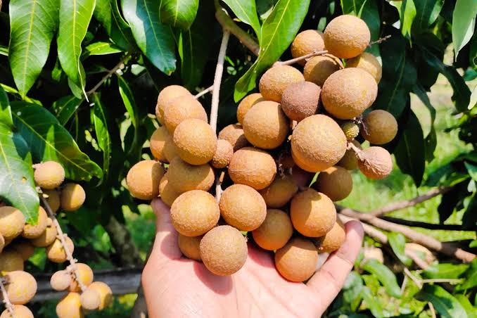

🌿 Tentang Lengkeng
Lengkeng merupakan buah tropis yang memiliki rasa manis dan aroma yang khas. Buah ini memiliki nama ilmiah Dimocarpus longan dan termasuk dalam famili Sapindaceae.Lengkeng banyak dibudidayakan di Indonesia, baik di perkebunan maupun pekarangan rumah.
🔎 Informasi Umum
🍃 Ciri-Ciri Lengkeng
🌳 Pohon
Pohon lengkeng dapat tumbuh sekitar 10 hingga 20 meter dengan batang yang cukup besar dan memiliki banyak cabang.
🍎 buah
Buah berbentuk bulat kecil dan biasanya tumbuh dalam tandan yang terdiri dari banyak buah.
🌿 Daun
Buah berbentuk bulat kecil dan biasanya tumbuh dalam tandan yang terdiri dari banyak buah.
🤍 Daging Buah
Daging buah berwarna putih bening, bertekstur kenyal, berair, dan memiliki rasa manis.
🌱 Habitat Lengkeng
🌿 Habitat Alami dan Budidaya
Lengkeng dapat tumbuh dengan baik di daerah tropis dan subtropis. Tanaman ini membutuhkan sinar matahari yang cukup, tanah yang subur, serta drainase yang baik.
Lengkeng dapat dibudidayakan di pekarangan, kebun, dan perkebunan. Beberapa varietas juga dapat tumbuh dengan baik di daerah dataran rendah hingga dataran tinggi.
Penyebaran Lengkeng di Indonesia
Lengkeng tersebar di berbagai wilayah Indonesia, terutama daerah yang memiliki kondisi iklim dan lingkungan yang sesuai untuk pertumbuhan tanaman manggis.
🚜 Sentra Budidaya Lengkeng di Indonesia
Lengkeng dibudidayakan di sejumlah daerah di Indonesia. Beberapa wilayah dikenal sebagai sentra produksi manggis karena memiliki kondisi lingkungan dan kegiatan budidaya yang mendukung.
Beberapa daerah seperti Semarang, Demak, dan Temanggung dikenal memiliki budidaya lengkeng
Lengkeng juga dibudidayakan di beberapa wilayah Jawa Timur, terutama daerah dengan kondisi lingkungan yang mendukung.
Beberapa wilayah di Sumatera Utara juga mengembangkan tanaman lengkeng sebagai tanaman buah.
💜 Kandungan dan Manfaat
🌱 Cara Perawatan Lengkeng
💧 Penyiraman
Siram tanaman secara rutin, terutama saat musim kemarau. Hindari genangan air di sekitar akar.
☀️ Sinar Matahari
Lengkeng membutuhkan sinar matahari yang cukup agar dapat tumbuh dengan baik dan membantu proses pembungaan.
✂️ Pemangkasan
Pangkas cabang yang kering, rusak, atau terlalu lebat agar tanaman memiliki bentuk yang baik dan sirkulasi udara lebih lancar.
🌿 Pemupukan
Berikan pupuk secara berkala sesuai kebutuhan tanaman untuk mendukung pertumbuhan daun, bunga, dan buah.
🐛 Pengendalian Hama
Periksa daun, bunga, dan buah secara rutin untuk mendeteksi hama atau penyakit sejak dini.
✨ Tahukah Kamu?
Lengkeng sering disebut sebagai “mata naga” dalam beberapa budaya karena bagian daging buahnya yang putih bening dan bijinya yang berwarna hitam menyerupai mata. 👁️🍈